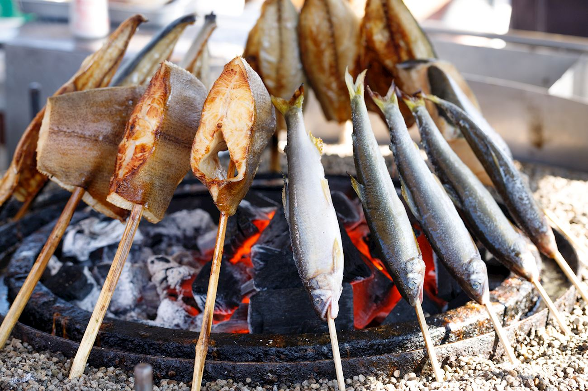
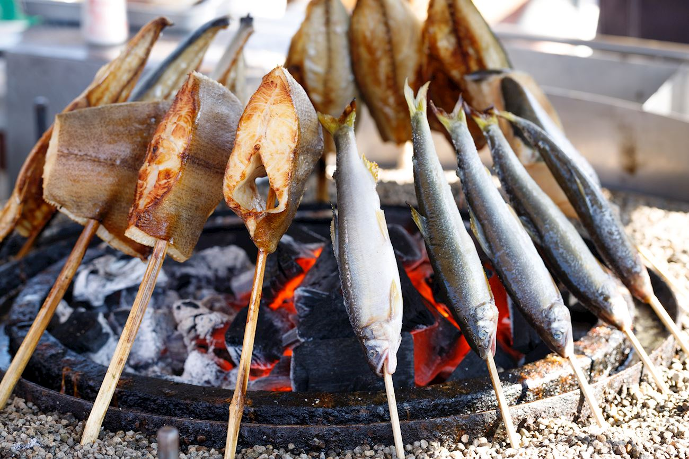
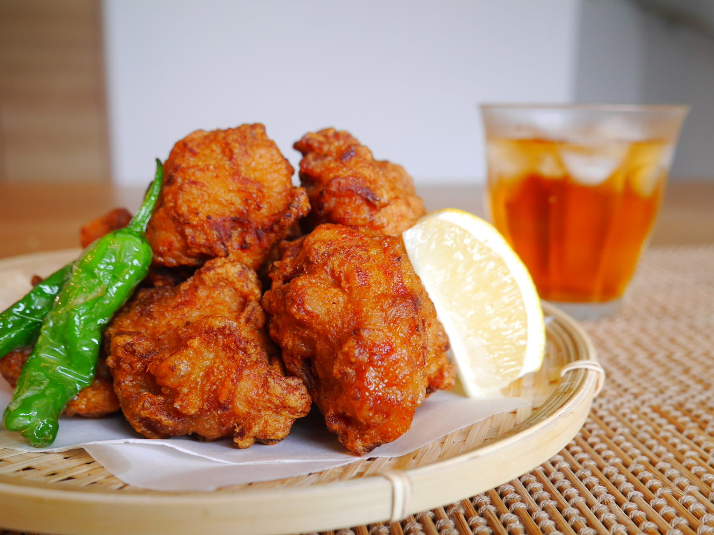
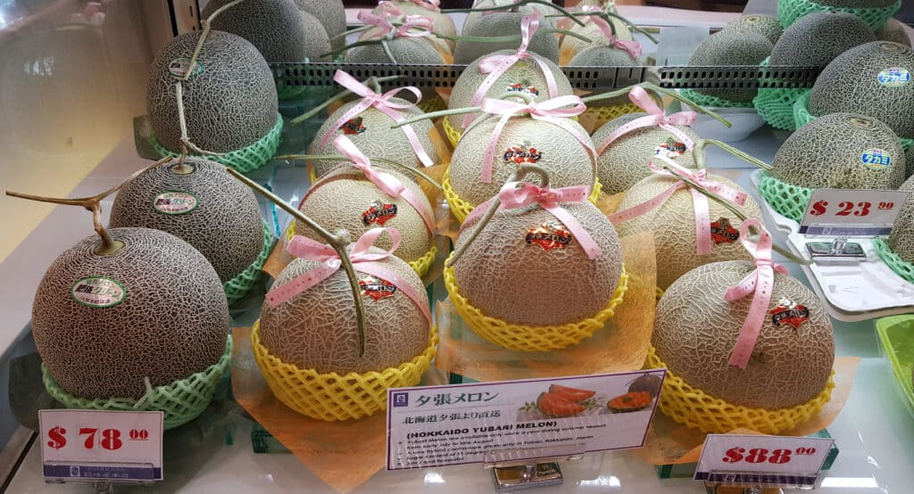
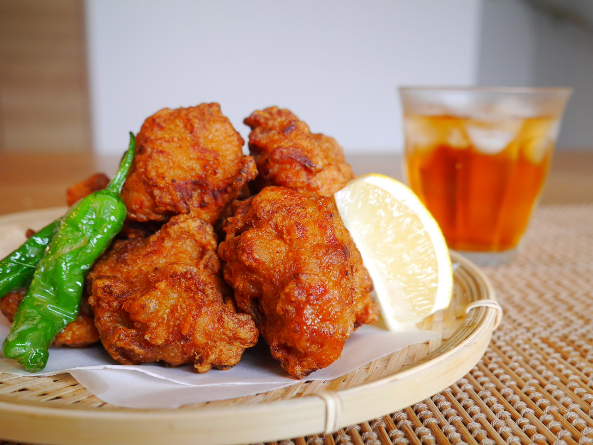
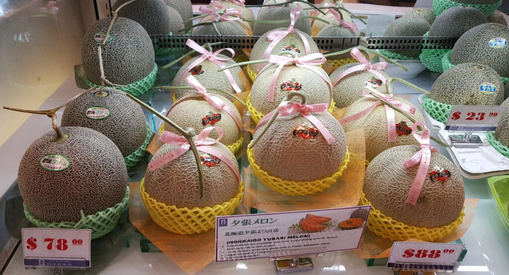

 



Japan's 47 prefectures, the northernmost, coldest, and least-densely populated, with just 5.4 million
people on 22% of Japan's total land area, according to the Ministry of the Environment.
But Hokkaido also contains a quarter of Japan's total
farmland, more than any other region in Japan,
thanks to major efforts in the 19th century to convert the island into an agricultural hub.
Since then,
Hokkaido has earned a reputation as Japan's "larder," the nation's major producer of rice,
dairy, and other important agricultural products,
in addition to top-notch seafood.
Hokkaido is also one of the only parts of Japan inhabited and influenced by the indigenous Ainu people.